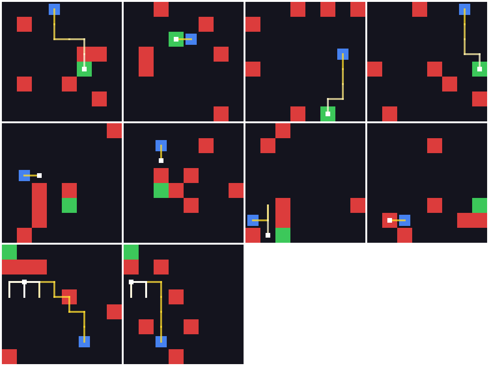
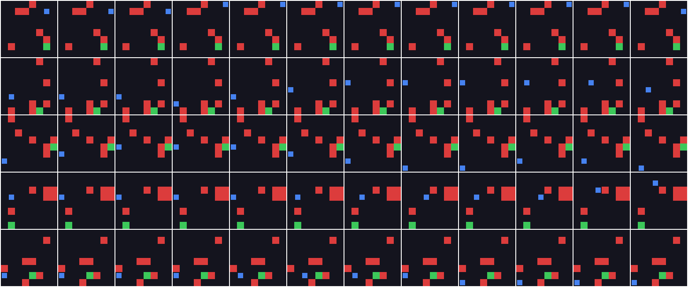
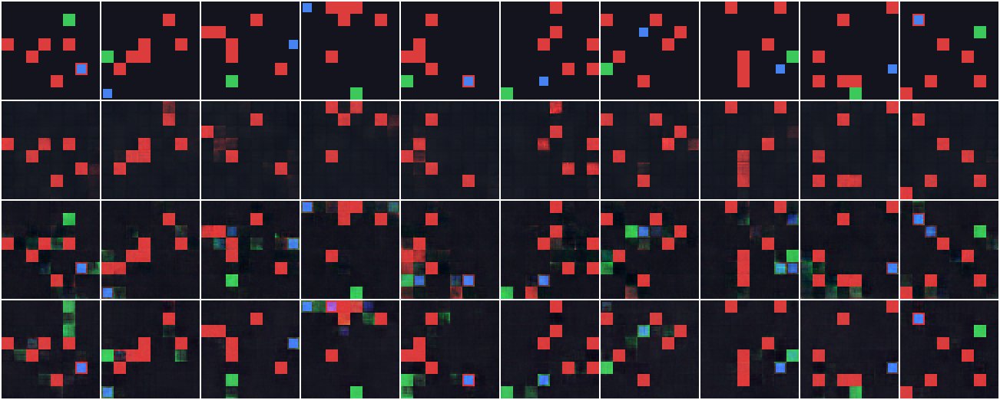
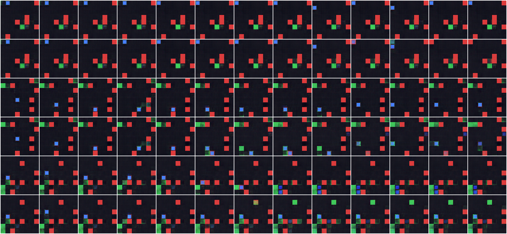
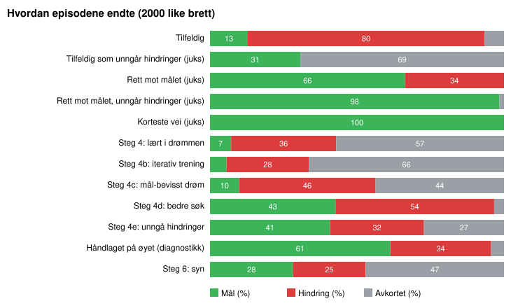
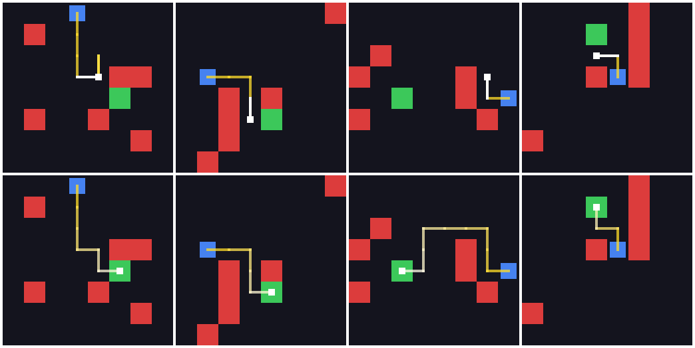
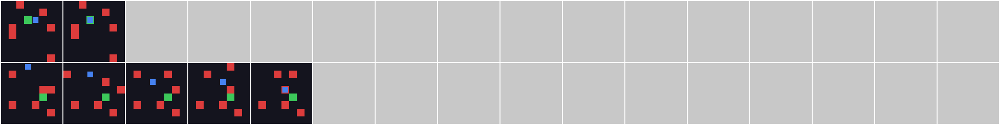

Steg 1
Et eget lite spill
GridDodge: et 8×8-rutenett med agent, mål og seks hindringer. +1 for målet, −1 for krasj, maks 50 skritt. Lite nok til å trene på en vanlig CPU.
tilfeldig spill: 11 % mål, 82 % krasjAgenten ser et lite rutenett som et bilde på 64×64 piksler. Den lærer først hvordan verden oppfører seg, og deretter lærer den å spille nesten bare inne i den lærte modellen, i «drømmen». Etter Ha & Schmidhuber (2018), men med egne valg underveis.
når målet med stille hindringer (tilfeldig: 13 %)
når målet når tre av hindringene beveger seg (tilfeldig: 10 %)

En VAE presser hvert bilde ned til 32 tall, z. Alt agenten vet om verden går gjennom dem.
Et MDN-RNN spår neste z og om skrittet ender i mål eller krasj. Kjørt i løkke er det en drøm.
En lineær regel med noen få dusin tall. Den trenes med evolusjon, bare inne i drømmen.
Hvert punkt er én agent spilt på de samme 2000 nye brettene. Det lange stykket rundt 10 % er ikke en feil i figuren: i fem steg lærte agenten mest å lure drømmen.
GridDodge: et 8×8-rutenett med agent, mål og seks hindringer. +1 for målet, −1 for krasj, maks 50 skritt. Lite nok til å trene på en vanlig CPU.
tilfeldig spill: 11 % mål, 82 % krasj
Uten vekting tegnet VAE-en aldri agenten, fordi én liten blå rute knapt teller i pikselfeilen. Vekting av objektene løste det.
99,2 % riktige celler, agenten riktig i 90 %
MDN-RNN-en lærer hva som skjer etter hver handling. Drømmen holder noen skritt, så sklir den: agenter forsvinner og mål dukker opp.
agenten riktig etter ett skritt: 58 % (stå stille-gjetning: 28 %)
Den første controlleren lærte å gå til veggen og vente. Drømmen trodde den nådde målet i 36 % av tilfellene, virkeligheten sa 7 %. Mer data, en drøm som vet hvor målet er, og en læreplan hjalp lite.
6–10 % målLærdom: en controller finner feilene i drømmen før den finner målet.
CMA-ES og en belønning for å komme nærmere målet ifølge M sin egen tro ga søket en bakke å gå opp. Så fikk C se ett skritt frem i drømmen for hver handling. Krasjene falt, men agenten begynte å pendle.
43 % mål · krasj 54 % → 32 %Alle agenter og fem grunnlinjer på de samme 2000 nye brettene, med intervaller. Juks-grunnlinjen viste at en enkel regel med sanne posisjoner når 99 %, så flaskehalsen var hva M visste, ikke hva C gjorde.
M visste hvor målet var i bare 26 % av skrittene
En liten modell leser agentens og målets celle rett fra z. Den ser riktig i over 90 %, men drømmen spådde fortsatt hendelser fra minnet, så den straffet nettopp strategien som virket.
28 % mål for den lærte, 61 % for en håndlaget regelNærsyn: for hver retning spår øyet om målet eller en hindring står i nabocellen. Drømmen ble ærlig, og controlleren lært i den ble best så langt.
75 % mål · 11 % krasjVår egen løsning: M sporer hvor agenten står med et lite Bayes-filter, og teller hvor den har vært. Controlleren lærer selv i drømmen at det ikke lønner seg å gå tilbake.
93 % mål · 7 % krasj · 0 av 2000 pendler
En side der man spiller av episoder og ser hva agenten ser, tror og drømmer i hvert skritt, ved siden av hva som faktisk skjer.
Åpne drømmesidenTre av seks hindringer går frem og tilbake. Ett bilde viser ikke hvor de er på vei, så agenten må huske. Nærsynet fikk minnet til M.
83 % mål (steg 8 uendret: 78 %)
Et nytt øye leser et kart over hindringene, og et lite nett regner ut bevegelsen fra to bilder. Ett minutts trening, og controlleren fra steg 10 ble bedre uten å trenes på nytt.
90 % mål · 10 % krasjLærdom: en bedre verdensmodell gjorde agenten bedre med en gang.
Drømmesiden viser nå hindringskartet og hvor M tror hindringene går. Den spådde 79 % av cellene en hindring flyttet seg inn i, med 95 % presisjon. Steg 13 er denne oversikten.
Hvert steg ble bygget med Claude Code, testet og godkjent før neste. Alle valg og blindveier står med begrunnelse i decisions.md, og kommandoene og tallene for hvert steg i docs/steg.md.